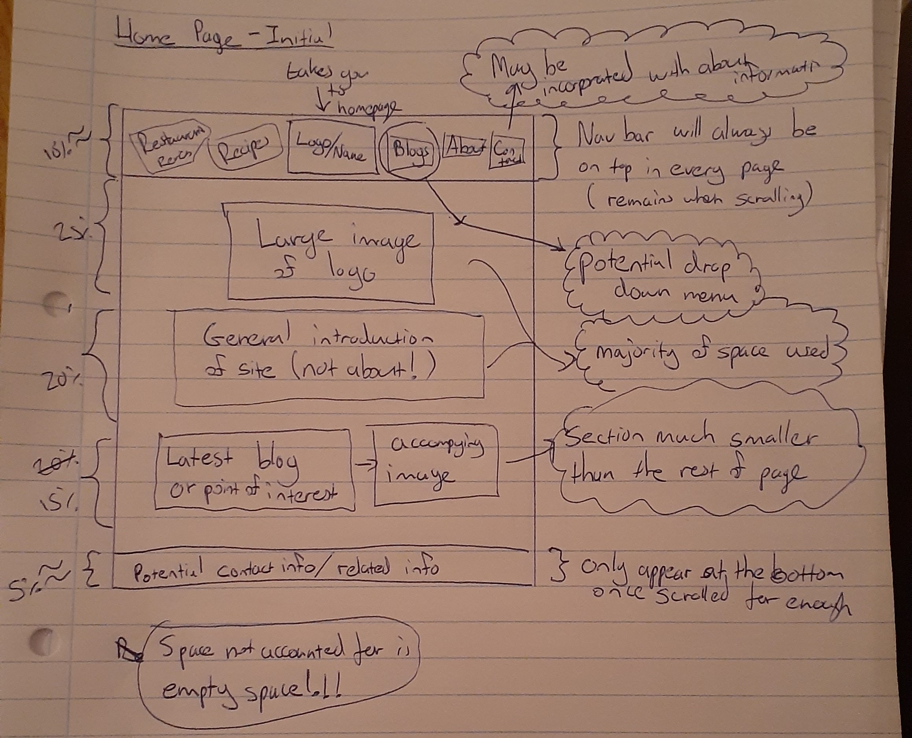

Wireframes!
The wireframes for this site are shown below, separated into different sections that represent the various components required.
The wireframes and general layout are subject to change as things are learnt, and new ideas form
Home Page - Initial idea

Main Blog Page - Initial idea
All blogs will be listed on a separate page according to their section. This will showcase latest blogs from each section.

Actual Blog Page - Initial Idea

About/Contact information - Initial idea
Contact information may move to a separate page or be removed completely depending on future design decisions.